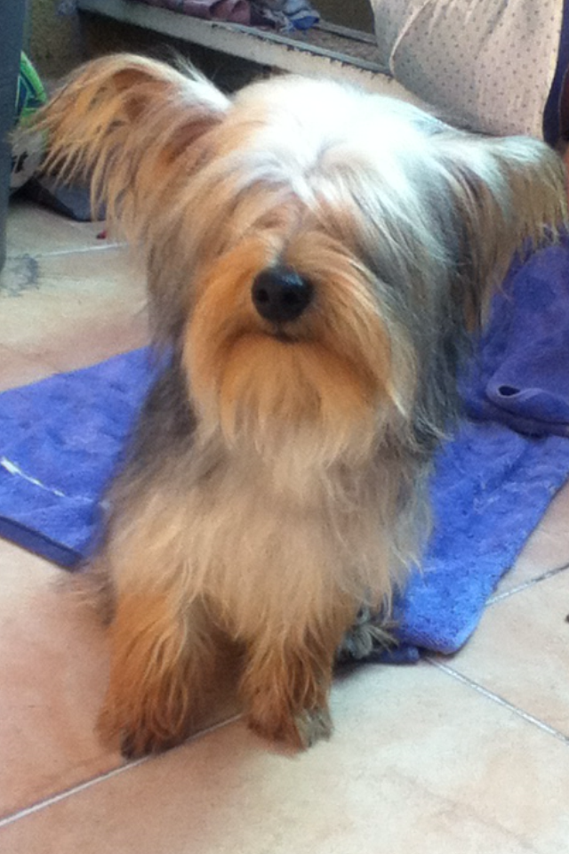

Escribe el selector de CSS correspondiente a los siguientes enunciados:
Selecciona todos los elementos del tipo párrafo que tengan la clase main-text: p.main-text
Selecciona todos los elementos de lista pares dentro de una lista no ordenada: ul li > nth-of-type:(even)
Selecciona los links visitados dentro de una barra de navegación: nav a:visited
Selecciona la imagen que sea descendiente inmediato de una card sobre la que se coloca el puntero del mouse: div.card:hover > img
Selecciona la primer sección que se encuentre dentro de una etiqueta main: main > section:first-of-type
Selecciona cualquier elemento que incluya en su classlist el texto "btn": *[class*="btn"]
Selecciona todos los botones excepto aquellos que sean el último hijo: button:not(:last-child)
Describe qué elemento será seleccionado con base en los siguientes selectores:
header#main-header > ul : Selecciona todas las listas desordenadas dentro de un header que tenagn el id= main-header
aside ul li:not(even) : Selecciona todos los elementos par de una lista dentro de una lista desordenada dentro de un aside
section#posts article:nth-of-type( odd ) : Selecciona todos los articulos impar dentro de section que tenga el id= post
table tr td :
footer > ul li a.nav-link : Selecciona todos los anchor que tenga una clase .nav-link dentro de una lista que esta dentro de una lista desordenada y que sea directo del footer
p span.text-white : Selecciona un contenedor que tenga como clase .text-white dentro de un parrafo
section.bg-dark p.text-white span : selecciona un contenedor dentro de un parrafo con una clase .text-withe dentro de una seccion que tenga como clase .bg-dark
Escribir el código necesario para crear los siguientes componentes:
Un botón cuyo color orginal sea azul, texto blanco, y al poner el mouse sobre de él su color de fondo cambie a peru y el texto sea negro ( el botón no debe tener borde en ninguno de ambos estados )
una sección que mida el ancho completo de la pantalla, la mitad de la pantalla de alto, y que dentro tenga dos imágenes cuales quiera, ambas con espacio igual entre ellas y entre los bordes de la sección

Crear 3 inputs de tipo radio, con las etiquetas "círculo", "cuadrado", "rectangulo", también crear un elemento que cambie de forma dependiendo del radio que esté seleccionado ( si se selecciona "círculo", el elemento debe convertirse en un círculo, y así respectivamente).